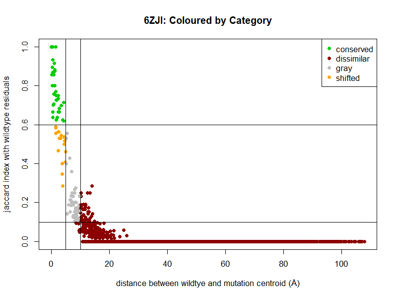
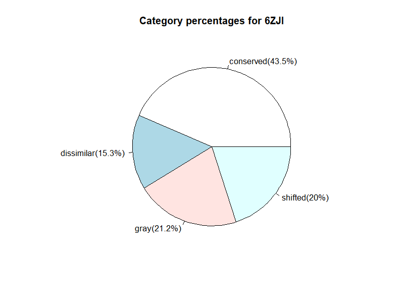
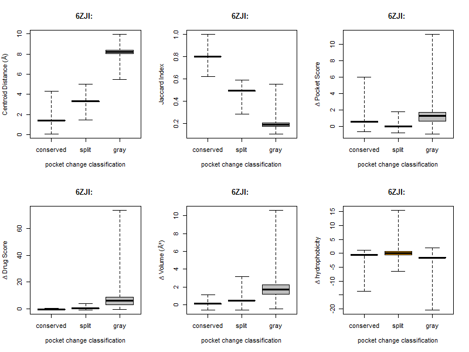

| Score type | Solvent Accessibility Agreement |
C-beta Interaction Potential |
All-Atom Interaction Potential |
Secondary Structure Agreement |
Torsion Angle Potential |
|---|---|---|---|---|---|
| Normalised | 0.6 | 0 | 0 | 0.5 | -0.1 |
| Z-Score | -0.8 | -0.9 | -1.9 | -0.7 | -2.2 |
| Average Local Quality Score |
Average Local Quality Score Error |
|---|---|
| 0.8 | 0.1 |
| Score type | QMEAN4 | QMEAN6 |
|---|---|---|
| Normalised | 0.7 | 0.7 |
| Z-Score | -3 | -2.6 |
| Chain | Wildtype | Residue | Mutation | QMEAN |
|---|---|---|---|---|
| BP1 | R | 463 | L | NA|
| BP1 | S | 315 | T | NA
| Chain | Wildtype | Residue | Mutation | Average Pairwise Distance |
Buried/Exposed | MSA data | Conservation (1-variable,9-conserved) |
Wildtypeprevalence(%) | Mutation prevalence(%) |
|---|---|---|---|---|---|---|---|---|---|
| BP1 | R | 463 | L | 0.5(0.1,0.8) | b | 150/150 | 5(6,5) | 0.7 | 84.7 |
| BP1 | S | 315 | T | 0.5(0.1,0.8) | e | 150/150 | 9(9,9) | 93.3 | 0 |
| RMSD (all atom) Reference Wildtype |
||
|---|---|---|
| Run | Repaired Wildtype Structure |
CreatedMutated Structure |
| 1 | 0 | 0 |
| 2 | 0.1 | 0.1 |
| 3 | 0.1 | 0.1 |
| 4 | 0.1 | 0.1 |
| 5 | 0 | 0 |
| Total energy kcal mol-1 |
SD kcal mol-1 |
Estimate kcal mol-1 |
LCL (95%) kcal mol-1 |
UCL (95%) kcal mol-1 |
|---|---|---|---|---|
| 0.3 | 0.5 | 0 | -1.4 | 1.3 |
| Category | Description |
|---|---|
| conserved | Centroid distance between pockets on wildtype and mutated structures is ≤ 5 Å AND residual overlap between pockets measured with Jaccard Index is ≥ 0.6 |
| shifted | Centroid distance between pockets on wildtype and mutated structures is ≤ 5 Å OR residual overlap between pockets measured with Jaccard Index is ≤ 0.6 AND is not conserved |
| gray | Centroid distance between pockets on wildtype and mutated structures is > 5 Å AND ≤ 10 Å AND residual overlap measured between pockets with Jaccard Index is < 0.1 AND < 0.6 |
| dissimilar | Centroid distance between pockets on wildtype and mutated structures is > 10 Å AND residual overlap measured between pockets with Jaccard Index is ≤ 0.1 |


